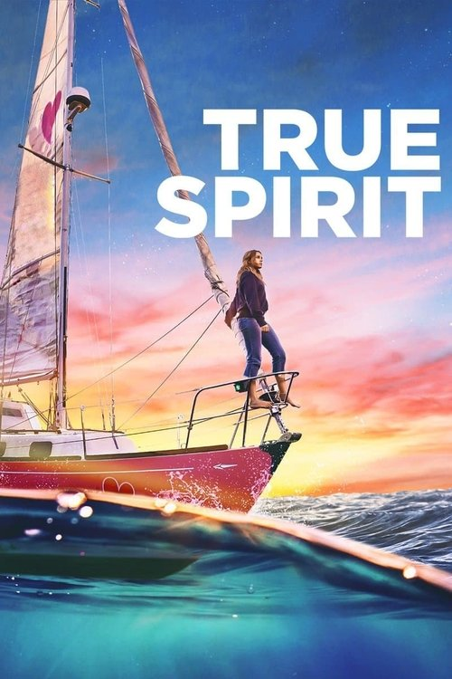

True Spirit (2023)
الوصف: When the tenacious young sailor Jessica Watson sets out to be the youngest person to sail solo, nonstop and unassisted around the world, many expect her to fail. With the support of her sailing coach and mentor Ben Bryant and her parents, Jessica is determined to accomplish what was thought to be impossible, navigating some of the world’s most challenging stretches of ocean over the course of 210 days.
الممثلون
- Teagan Croft (Jessica Watson)
- Cliff Curtis (Ben Bryant)
- Alyla Browne (Young Jessica)
- Josh Lawson (Roger Watson)
- Anna Paquin (Julie Watson)
- Bridget Webb (Emily Watson)
- Stacy Clausen (Tom Watson)
- Todd Lasance (Craig Atherton)
- Josephine Flynn (Reporter #1)
- Alice Tate (Georgina Bauer)
المخرج: Sarah Spillane
المنتج: Susan Cartsonis